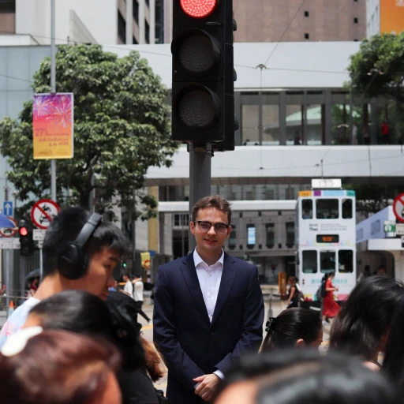

Hi there, my name is Rene Kärkkäinen! I study information technology with a security-first mindset. Most of my time has gone into systems, networks, security and software. I have worked in IT support, infrastructure, security-minded operations and technical teaching.
I am currently pursuing a Bachelor of Engineering in Information and Communication Technology at Metropolia University of Applied Sciences. Outside the classroom, I spend a lot of time working on my homelab, which is like a regular lab, except it is at home and no one is wearing a white coat. Usually.

I am especially interested in data centers, because they are like the heart of the internet, except louder, colder, and with more blinking lights. One day, I hope to work in one.
My top three career goals are to work for the Finnish Government, gain experience abroad, and maybe work around startups, because startups are where people say things like “disrupt” and “scale” and sometimes actually mean them.
If you wish to reach me, the best way is by email. I read messages regularly.
- Email: rene@karkkainen.net
- Phone: +358 45 333 8778
- LinkedIn: linkedin.com/in/renekarkkainen
- GitHub: github.com/jaakkq
If you prefer sending PGP encrypted emails you can find my PGP from karkkainen.net/pgp.txt